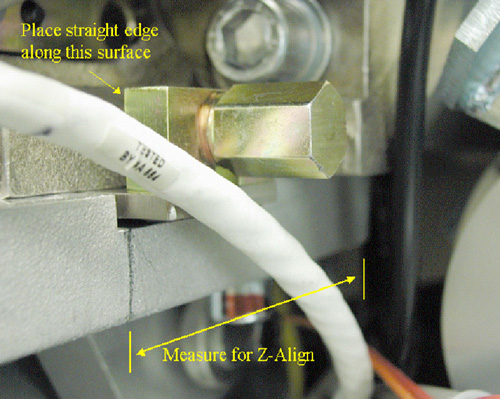
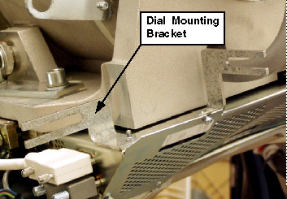
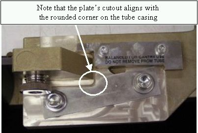

Proprietary to General Electric
Direction 5193891-800, Rev# 5
LightSpeed 5.X Pro16 Limited Access Service Information (Adv)
Proprietary to General Electric |
| Required Persons | Preliminary Reqs | Procedure | Finalization |
|---|---|---|---|
| 1 | Timing Not Applicable | 1 hour | 7 hours |
| Last Revised: | 14 May 2007 |
| Item | Qty | Effectivity | Part# | Manufacturer | |
|---|---|---|---|---|---|
| HV Bleeder Kit | 1 | - | 2345332 | - | |
| Oil Compensation Tool | 1 | - | 5125182 | - | |
| Tube Oil | At least 1 Liter | - | T0552G (1 gallon) | - | |
| Oscilloscope | 1 | - | - | - | |
| Digital Multimeter | 1 | - | - | - | |
| Tube hoist and boom | 1 | - | - | - | |
| Spanner Wrench | 1 | - | - | - | |
| Dial Calipers | 1 | - | - | - | |
| POR Film | - | - | - | ||
| Dial Indicator Gauges | 2 | - | - | - | |
| Item | Qty | Effectivity | Part# | Manufacturer |
|---|---|---|---|---|
| Dry Wipes or Paper Towel | - | - | - |
| POTENTIAL FOR ELECTRIC SHOCK. | |
| LETHAL VOLTAGES MAY BE PRESENT IN THE GANTRY. | |
| Follow proper Electrical Lock-out/Tag-out procedures. |
| POTENTIAL FOR PERSONAL INJURY (PINCH, CRUSH, ENTANGLEMENT OR IMPACT INJURIES ARE POSSIBLE). | |
| GANTRY HAS ROTATING ASSEMBLY. | |
| Use the Gantry’s Rotational Lock, to prevent uncommanded motion of the Gantry’s rotating assembly. |
| The heat exchanger may take on excessive amounts of coolant due to thermal expansion if the tube is not allowed to cool prior to tube change. If this occurs, the system will not scan and the heat exchanger will require replacement. Therefore, you should wait at least 1 hour after the last scan before disconnecting the tube from the heat exchanger. | |
| Follow ALL required safety and PPE procedures customary for your organization, when working on this product. | |
| Condition | Reference | Eff |
|---|---|---|
Only trained service personnel should service the GE CT Scanner. | - | - |
Before performing this procedure, familiarize yourself with the Performix Pro100 Tube Crate information and Securing HV Cable (Pro 16) procedure.
Remove and set aside gantry side, top and front covers.
| If the gantry must be tilted, remember to tilt the gantry back to zero degrees. | |
Remove the M12 bolts holding mounting bracket for the right front gantry cover and set the assembly aside. It may be necessary to tilt the gantry back to remove the third bolt (not normally installed).
Illustration 1: Mounting bracket for right front gantry cover and lift hoist service location

Turn off the AXIAL DRIVE ENABLE, HVDC ENABLE, and 120VAC switches on the service switch panel.
| 120 / 208 VAC Gantry power must not be on with any of the coolant / heat exchanger hoses disconnected. With Gantry power on and the cooling loop incomplete, the pump will run uncontrollably and become damaged. | |
Turn off facility power to PDU and lockout/tagout according to lockout/tagout procedure.
Position gantry so that the tube is positioned between 11 and 12 o'clock, and the HV Tank is at the 3 o'clock position.
| NOTE: | The HV cable's candlestick has a rubber sealing ring that must not be lost. |
Free the HV cable.
Carefully cut all tie-wraps securing HV cable. Note HV cable routing.
Loosen the cable's locking ring.
Pull cable terminal stick out of its receptacle on HV tank. Place tube crate cover over the HV cable stick. DO NOT lose the rubber sealing ring.
Place a cap or enough paper towel in the newly created hole on the HV tank receptacle to prevent oil from leaking when you manually rotate the gantry to remove the tube.
Manually rotate the Gantry until the X-Ray tube reaches the 3 o'clock position.
| CRUSH POINT. | |
| IF THE GANTRY IS NOT SECURELY LOCKED, UPON REMOVAL OF THE X-RAY TUBE, THE GANTRY WILL VIOLENTLY ROTATE DUE TO WEIGHT IMBALANCE. | |
| Ensure the gantry is securely locked by attempting to rotate the gantry by hand. |
Engage rotational lock.
Measure, along top of the tube housing, the distance from the edge of the ISO adjustment block to the rear edge of the tube housing. See Illustration 2.
Illustration 2: Z-Alignment Measurement

Record the measurement. This will help put the new tube in roughly the same place, making alignments easier.
Remove Power I/F board cover.
Disconnect thermal sensor from Power I/F board at J7. Cut any tie-wraps holding the wires to the gantry.
Remove dial mounting bracket. See Illustration 3.
Illustration 3: Dial Mounting Bracket

Disconnect anode stator cable from aux box.
Remove 3 pin connector from aux box.
Disconnect the clamp holding the cable to aux box. Keep the clamp, as you will need it for the new tube.
Remove POR adjustment block and screw. Keep hardware.
| NOTE: | Counting the number of rotations it takes to disengage the threads is helpful for installing the new tube near the same location as the previous tube (making alignments easier). |
Quickly disconnect the pump from the tube at the quick disconnect (QD). Align the pin with the slot on the QD and disconnect.
Disconnect X-Ray tube from heat exchanger at quick disconnect.
Insert the lifting post, boom, and chain hoist. Refer to Illustration 1 for location.
Disconnect Smart ID cable from Smart ID module (on tube).
Connect hoist to tube lifting point. Newer model tubes (2005) employ a single point lifting feature. For older tubes (pre 2005) that must use a sling, connect the sling to the lifting hooks.
Ensure that the sling / hoist joint is centered directly above the tube.
Remove slack in hoist / chain / sling but do not over tighten. The tube should not move when the mounting bolts are removed.
Remove the two bottom M12 mounting bolts, and then remove the upper bolts.
Discard the mounting bolts and washers. The new tube comes with new mounting bolts.
| Be careful not to damage the fragile copper filter on the tube’s window. | |
Place the tube in the crate for shipping. For more information, see the Performix Pro100 Tube Crate procedure.
Allow the tube unit to warm to room temperature before you install it.
| CRUSH POINT. | |
| THE TUBE LIES ON ITS SIDE IN THE CRATE AND WILL FLIP 90 DEGREES WHEN IT IS RAISED. | |
| Ensure that you place the crate so that neither you nor the gantry is hit by the tube as it is raised out of the crate. |
| Use care when hoisting the tube, to avoid equipment damage. | |
Place new tube near gantry so that you can attach the hoist to the hook(s) and use the hoist to lift the tube into place. For more information, see Performix Pro100 Tube Crate.
With tube suspended, visually inspect the copper filter. The primary copper filter is easily examined, since it is part of the tube and visible. The copper filter should be clean, as well as dent and scratch free:
If contamination is visible (see Illustration 4), proceed to Collimator Cleaning Procedure Details.
If scratches or dust are visible, the copper filter must be replaced.
Discoloration is acceptable.
Illustration 4: Extremely Contaminated Copper Filter

Make a mark on the tube housing where the edge of the ISO adjustment block should be, according to your measurement in the removal process. See Illustration 2.
Attach adjuster screw from old tube to new tube.
| NOTE: | If you counted the number of rotations for removal, insert screw the same number of rotations. |
Carefully swing the tube into place.
| POTENTIAL FOR PATIENT INJURY. | |
| X-RAY TUBE IS ON ROTATING ASSEMBLY. | |
| Select proper bolt kit from tube crate, based on system type. NEVER mix the mounting hardware types. |
| When attaching the tube, be careful with the Copper Filter. It should be free of debris, scratches and dust. The reason is particles create artifacts in the image by affecting the attenuation properties of the copper filter. | |
Using the new mounting screws shipped with the tube, carefully attach the new tube to the gantry. Make sure that the tube lies flat, as it can be difficult to place properly. Using the hoist to control the tube’s height can help greatly in mounting.
| EJECTION HAZARD | |
| TUBE MAY EJECT IF IMPROPER MOUNTING HARDWARE COMBINATION USED. | |
| READ THE FOLLOWING INSTALLATION INSTRUCTIONS CAREFULLY TO ENSURE THAT THE PROPER MOUNTING HARDWARE IS USED. |
Two versions of washers for the M12 bolts exist. Early versions utilize a “pressure plate”along with a lockwasher. Later tubes ship with pre-assembled bolt / lockwasher / standoff pieces. Refer to Illustration 5 and Illustration 6.
The pressure plates may NOT be used when counterbores are present OR with the standoff style washer shown Illustration 6.
Illustration 5: Pressure Plate - Correct Installation

Illustration 6: Pre-assembled bolt / lockwasher / standoff

Installing the tube with either hardware combination is acceptable, but ensure that the hardware is installed correctly. The pre-assembled bolt combination may be used with or without counterbores present as long as the pressure plate is NOT installed. The tube crate may also contain more information.
Finger tighten bolts.
Disconnect hoist.
Align with z-align measurement made during removal (pencil mark).
Adjust M12 mounting bolts to pre-load torque specification. Refer to Table 1.
Table 1: Pre-load Torque Specification
| 25 ft.-lbs | 33 N-m | 295 in-lbs | 340 kg-cm |
Apply final torque on all four M12 bolts according to the values specified in Table 2.
Table 2: Final Torque
| 49 ft.-lbs | 66 N-m | 590 in-lbs | 680 kg-cm |
| Do not turn 120 / 208 VAC Gantry power on with any of the coolant/ heat exchanger hoses disconnected. With Gantry power on and the cooling loop incomplete, the pump will run uncontrollably and become damaged. | |
Disconnect sling and hoist from tube and boom.
Remove the post and boom from the gantry.
Disengage rotational lock.
Connect the stator cable to the aux box. Use the clamp from the old tube to attach the exposed shield to the aux box.
Connect both the pump AND the heat exchanger hoses to the tube.
Using new hardware from tube crate, secure the quick disconnect safety locking mechanisms. The torque spec. for the quick disconnect safety mechanisms is 7.9 N-m (5.8 lb-ft, 70 lb-in, 81 kg-cm), however, if the locking mechanism rotates in relation to the quick disconnect, tighten slowly until it does not do so.
| NOTE: | Do not severely overtighten the M6 bolts. Doing so can cause the quick disconnects to leak. |
Connect the thermal sensor to the Power Interface Board, J7.
Reattach Power I/F board cover.
Reattach the dial mounting bracket.
Reattach the SMART ID cable.
| Incorrectly sealed and secured HV cable can lead to damage to the tank, tube, or other parts of the gantry. | |
Rotate tube to 12 o'clock position.
Connect the HV cable. See Securing HV Cable (Pro 16) for more information.
Reattach POR adjuster block.
Connect Smart ID cable from power interface board to Smart ID module on tube.
Check for oil leaks by rotating the gantry slowly.
Manually rotate the gantry, at least one full revolution, and verify that no rubbing occurs.
Tie-wrap all cables:
Stator cable
HV cable
Tube thermal switch
Install the right gantry front cover bracket. Refer to Illustration 1 in tube removal process.
Restore system power at the main disconnect panel.
Turn on gantry 120 VAC, HVDC ENABLE and AXIAL DRIVE ENABLE on the service switch panel. Press DRIVES RESET.
After restart of software, begin entering the new tube information.
Reset the system:
Select [SYSTEMRESETS] .
Select [SCAN] , then [RUN] .
Checklist:
New mounting bolts and washers are used for mounting the tube; old mounting bolts and washers are discarded.
Proper torque specifications are followed for all fasteners (see “General Torque Cross Reference” in Torque Wrench Information).
Tie-wraps and cables are in place.
Perform Tube Installation Certification, if needed. Refer to SmarTube™ Setup.
If detector and collimator were previously aligned before tube change:
If you have a system with the detector and collimator previously aligned before this tube change and there are no image quality issues, use the “Quick Tube Change” procedure below:
It may be necessary to compensate the Heat Exchanger. This ensures that the amount of oil in the Heat Exchanger is correct. See Heat Exchanger Compensation (Oil-Based Heat Exchangers only)
Initialize Database for JEDI (in JEDI Generator Tool (Pro16) Data Management pane.)
Tube Z-Align
HV Tank Feedback Resistor Verification (Pro 16) (bleeder test)
Tube Usage Information is found on the Common Service Desktop following path:
Error Logs>Tube Usage>Details.
Z-Slope
Detailed Cals
N Number Check
Save System State
If you cannot follow the quick tube change procedure:
If you cannot follow the quick tube change procedure for any reason, perform the retest steps below:
It may be necessary to compensate the Heat Exchanger. This ensures that the amount of oil in the Heat Exchanger is correct. See Heat Exchanger Compensation(Oil-based heat exchangers only).
Reset Tube TnT Data (in JEDI Generator Tool (Pro16))
HV Tank Feedback Resistor Verification (Pro 16) (bleeder test)
Tube Usage Information is found on the Common Service Desktop following path:
Error Logs>Tube Usage>Details.
Z-Slope
Detailed Cals
N Number Check
Save System State